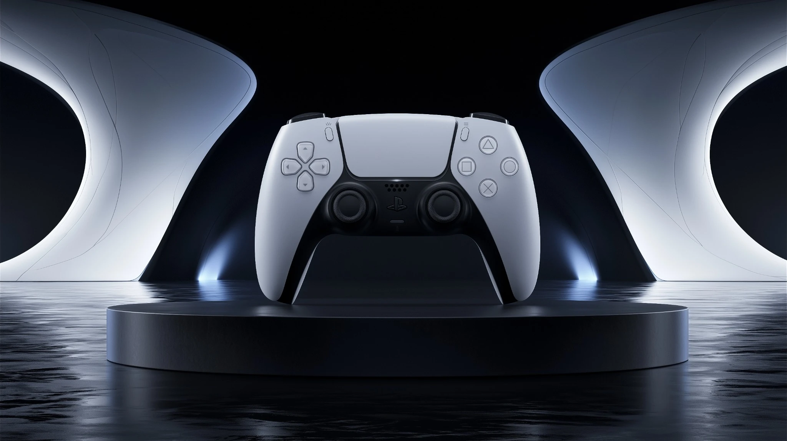

PRODUCT CAMPAIGN STUDY / 03
DUAL
SENSE
INDEPENDENT SPECULATIVE STUDY
NOT AN OFFICIAL PLAYSTATION CAMPAIGN
NOT AN OFFICIAL PLAYSTATION CAMPAIGN
BUILT AROUND
THE FEEL.
01 / DIRECTION
A product-led visual system exploring precision, tactility and futuristic space through controlled light and minimal form.
SOCIAL / 9:16
02 / SOCIAL SYSTEMONE OBJECT.
ONE OBJECT.
MULTIPLE
FORMATS.
The visual language extends from a wide hero composition into a vertical placement designed for social and mobile-first campaign use.
16:9 / HERO9:16 / STORY1:1 / SOCIAL
03 / MATERIAL STUDYCLOSER
CLOSER
TOUCH.
Macro framing shifts attention from silhouette to texture, controls and surface detail.
04 / MOTION STUDYDUALSENSE
DUALSENSE
IN MOTION.
ROLECONCEPT / ART DIRECTION
AI IMAGE & MOTION DEVELOPMENT
FINAL COMPOSITING
AI IMAGE & MOTION DEVELOPMENT
FINAL COMPOSITING
TOOLSMIDJOURNEY
ADOBE PHOTOSHOP
AI MOTION WORKFLOW
ADOBE PHOTOSHOP
AI MOTION WORKFLOW
NOTEINDEPENDENT SPECULATIVE STUDY.
NOT COMMISSIONED OR ENDORSED
BY SONY INTERACTIVE ENTERTAINMENT.
NOT COMMISSIONED OR ENDORSED
BY SONY INTERACTIVE ENTERTAINMENT.